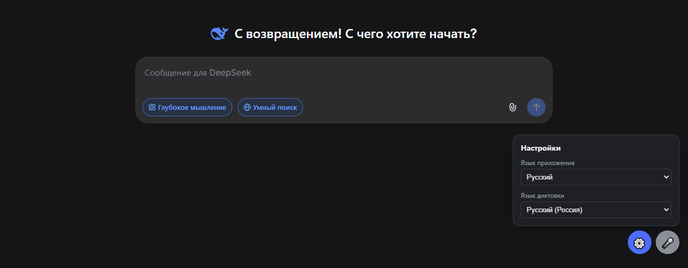

DeepSeek для Windows*
Приложение с открытым исходным кодом для Windows 10 и 11.
Один файл DeepSeek.exe · Windows 10/11 · работает на Microsoft Edge, который уже есть в Windows · лицензия MIT

Почему это приложение
Своё окно
Без вкладок и адресной строки. DeepSeek открывается как обычная программа Windows, со своим значком на панели задач.
Один файл
Скачивается один DeepSeek.exe, без установщика и архивов. Настройки и вход в аккаунт хранятся в папке приложения; ваш обычный браузер не затрагивается.
88 языков интерфейса
Язык интерфейса DeepSeek переключается из панели настроек.
Голосовой ввод — по желанию
Надиктовать сообщение можно кнопкой микрофона или Ctrl+Пробел, более 50 языков.
Установка
- Скачайте
DeepSeek.exe: один файл, ничего распаковывать не нужно. - Запустите его. Ярлык DeepSeek появится на рабочем столе и в меню «Пуск».
- Войдите в аккаунт DeepSeek.
Если Windows пишет «Система Windows защитила ваш компьютер», нажмите «Подробнее» → «Выполнить в любом случае». exe не подписан платным сертификатом, см. раздел «Прозрачность».
Прозрачность
- Весь код открыт: запускающий файл (
DeepSeek.cs, около 120 строк) и небольшое расширение Edge. DeepSeek.exeсобирает GitHub Actions из открытого кода, а не автор на своём компьютере. Логи сборки публичны.- У каждого релиза есть SHA-256 и аттестация происхождения GitHub:
gh attestation verify DeepSeek.exe -R ishimuraxxx-ai/deepseek-1.0.1 - Никакой телеметрии. Приложение обращается только к DeepSeek.
Частые вопросы
Есть ли официальное приложение DeepSeek для Windows?
Нет (на сентябрь 2026). У DeepSeek есть сайт chat.deepseek.com и мобильные приложения. В Microsoft Store под именем DeepSeek доступно только Android-приложение для региона «Китай», на Windows 10 оно не работает. Этот проект — неофициальная открытая альтернатива: официальный сайт в отдельном окне.
Как установить DeepSeek на компьютер с Windows 10 или 11?
Скачайте DeepSeek.exe из Releases (один файл) и запустите. Ярлык DeepSeek появится на рабочем столе и в меню «Пуск».
Это безопасно?
Весь код открыт, exe собирается публично на GitHub Actions с контрольными суммами и аттестацией происхождения. Приложение не собирает данные и хранит вход в аккаунт только в своей папке.
Как поменять язык интерфейса DeepSeek?
⚙️ → «Язык приложения». Доступны все 88 языков сайта.
Почему не проходит капча DeepSeek?
Обычно из-за VPN. Выключите его на время входа или добавьте в исключения deepseek.com, fengkongcloud.com, fengkongcloud.cn и awswaf.com.
Работает ли на macOS или Linux?
Нет, только Windows 10/11 с Microsoft Edge.